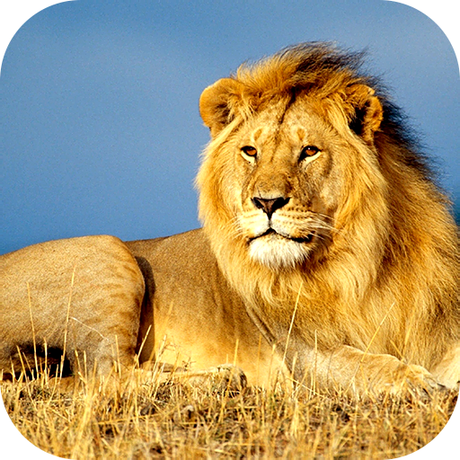
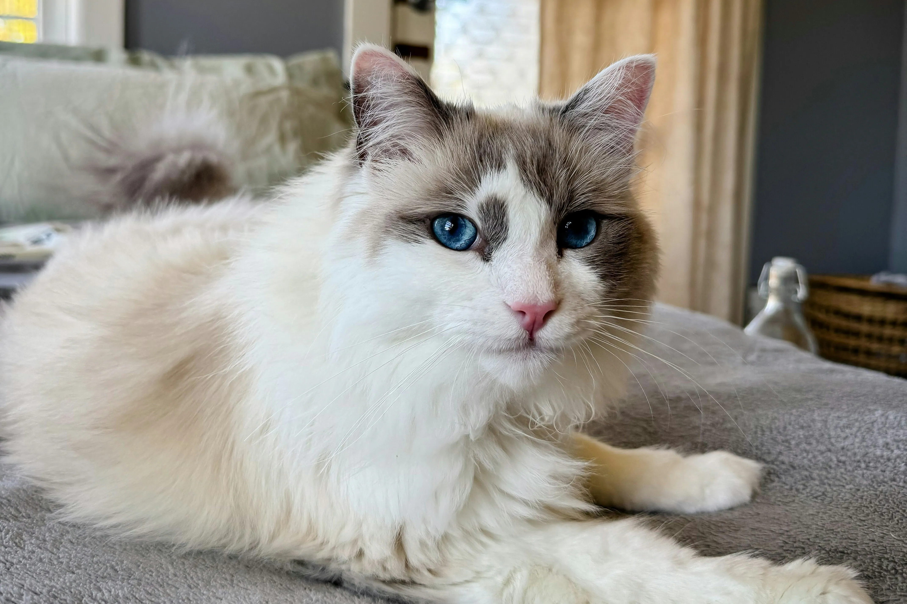
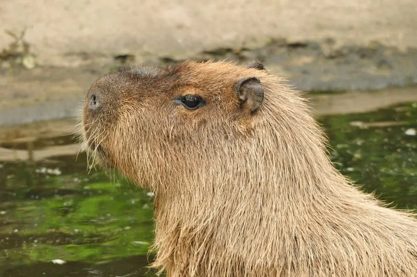

lionAn ambitious lion is bound to possess a majestic aura and a grand career. He/She is also very likely to become my business partner.
"Driven by a desire for change and growth, I decided to teach myself to become a full-stack developer. This website is a hands-on practice ground where I learned HTML, CSS, and JavaScript from the ground up — including the scroll-triggered animations on this page and the interactive typing effect on each character page. It is intentionally simple, and it marks the real beginning of my journey into tech."
Each animal shown below represents a person I know; no names are mentioned to respect their privacy.

lionAn ambitious lion is bound to possess a majestic aura and a grand career. He/She is also very likely to become my business partner.
 dog
dog
He provides me with an endless stream of confidence and strength.

catA gentle cat who healed me. Without him, I might not even be in this world today; he is my most cherished family member.

capybaraHe was once a myth, and perhaps he will become the lingering glow of my sunset in the days to come.
As time passes, I seem to have been polished into someone smoother. Despite many unexpected turns, there is no denying that it was these accidents and these animals that assembled me into who I am today.